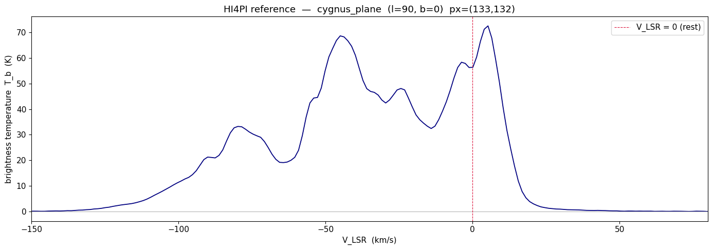
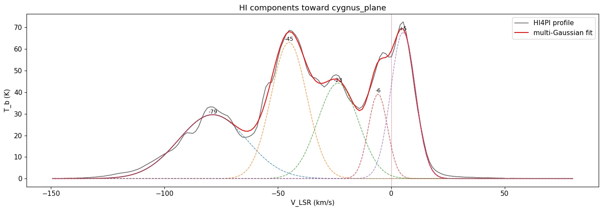
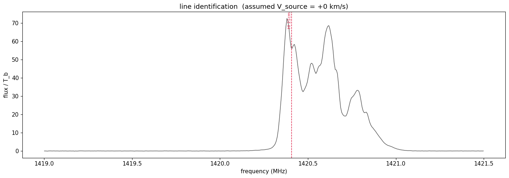

Radio waves are light — just stretched a billionfold
Karl Jansky · Grote Reber · the opening of the radio window
Visible light is a sliver of the electromagnetic spectrum. Stretch the wavelength past red and you pass through infrared into the radio band — the same self-propagating wave Maxwell described, only with wavelengths from about a millimetre to tens of metres rather than a fraction of a micron.
In 1932 Karl Jansky, hunting static for Bell Labs, found a hiss that rose and set with the stars, not the Sun — radio waves from the centre of the Milky Way. Grote Reber built a dish in his backyard and mapped the radio sky through the 1930s. The cosmos was broadcasting all along; we simply had no ears.
Why radio at all? Earth's atmosphere is opaque to most of the spectrum but holds two clear windows: the optical, and a broad radio window from roughly 10 MHz to 300 GHz. Below ~10 MHz the ionosphere reflects waves back to space; above ~300 GHz water vapour absorbs them. In between, radio pours straight through cloud and daylight alike.
Radio reaches what light cannot: cold gas that never glows visibly, electrons spiralling in magnetic fields, the cosmic microwave background, and dense regions hidden behind dust. A whole parallel astronomy — much of it spectroscopy, reading single sharp frequencies like the 21-cm line — grew out of opening that window.
Slide across the radio window
Drag from the 30-metre waves the ionosphere bounces, up through the metre and centimetre bands where most radio astronomy lives, to the millimetre edge where the atmosphere closes again. Read off wavelength, photon energy, what each band observes, and whether it reaches the ground.
∴ The reasoning: why radio photons are so faint, yet so useful
A 1420 MHz photon carries about a millionth of an electron-volt — a hundred-millionth of a visible photon's energy.
- Photon energy is $E=hf$. At $f=1.42\times10^{9}$ Hz, $E=(6.63\times10^{-34})(1.42\times10^{9})=9.4\times10^{-25}$ J $\approx 5.9\ \mu\text{eV}$.
- So radio carries almost no energy per photon — a single source must pour out an enormous number of photons to be detectable. Radio telescopes are large because they must gather a vast, faint flood.
- But low energy is exactly why radio shines for cold matter: a cloud at 100 K, far too cold to glow in visible light, still radiates freely at radio wavelengths and can imprint sharp spectral lines.
Practice problems
1. The 21-cm hydrogen line has frequency $f=1420.4$ MHz. Using $c=\lambda f$ with $c=2.998\times10^{8}$ m/s, confirm its wavelength really is about 21 cm.
Show solution
- Rearrange. $\lambda=c/f=\dfrac{2.998\times10^{8}}{1.4204\times10^{9}}$.
- Evaluate. $\lambda=0.2111$ m $=21.1$ cm.
2. Radio Jove listens at $f=20.1$ MHz. What wavelength is that, and why does an antenna for it have to be several metres across?
Show solution
- Wavelength. $\lambda=c/f=\dfrac{2.998\times10^{8}}{2.01\times10^{7}}=14.9$ m.
- Antenna scale. A simple dipole is about $\lambda/2\approx7.5$ m long — antennas are sized to the wavelength, and decametre waves are long.
Where do cosmic radio waves come from?
One rule — accelerate a charge — and the cosmic machines that obey it
A radio wave is electromagnetic radiation with the longest wavelengths in the spectrum — frequencies of about 300 GHz and below. Like all light it is a self-propagating ripple of electric and magnetic fields. The question is what sets those fields rippling in the first place.
There is a single rule behind every radio source in the Universe: an electric charge that accelerates radiates. A charge sitting still, or coasting at constant velocity, makes no wave. But a charge that speeds up, slows down or changes direction shakes its electric field, and that disturbance races outward as light. A time-varying electric current — charges sloshing back and forth — is exactly a crowd of accelerating charges, which is how a radio antenna transmits and how nature broadcasts too.
Nature accelerates charges in several ways. The random thermal jostling inside any warm object makes black-body radio glow; electrons whipped around magnetic field lines make synchrotron emission; the sudden surge of a lightning stroke crackles across the band; and violent bursts erupt from stellar atmospheres and planets. Each is just charges being accelerated.
And the spectrum's shape betrays which machine is running: smooth continuum from thermal and synchrotron sources, sharp spectral lines from atomic and molecular transitions, some amplified into cosmic masers. Reading the shape is how radio astronomy diagnoses temperatures, magnetic fields and explosions across the cosmos.
A. The one rule: an accelerating charge radiates
Every transmitter on Earth and every radio source in the sky comes down to this single picture. Watch it happen two ways — a charge driven straight back and forth (a current), and a charge bent around a magnetic field.
Watch a radio wave leave an accelerating charge
On the left, a charge is driven up and down — a time-varying electric current. Each time it reverses, it accelerates, and flings out an electromagnetic ripple; the wavefronts march away at the speed of light. On the right, a charge bent around a magnetic field line is always accelerating (its direction keeps changing), so it beams radiation outward — the seed of synchrotron emission. Drag the sliders and watch the radiation speed up and strengthen.
∴ The reasoning: why acceleration, not motion, is the key
A static or steadily moving charge cannot radiate — only a changing motion can.
- A charge carries an electric field reaching out around it. If the charge does not move, the field is static — no wave.
- If it moves at constant velocity, the field simply travels along rigidly — still no radiation (an observer moving with it sees nothing happening).
- But if the charge accelerates, the field lines must "kink" to catch up, and that kink propagates outward at $c$ — a pulse of light. Keep accelerating it back and forth at frequency $f$ and you launch a continuous wave of frequency $f$.
- The radiated power climbs steeply with acceleration (Larmor's law, $P\propto a^2$): shake harder, or bend tighter in a stronger field, and the radio glow brightens.
B. The cosmic accelerators
Naturally occurring radio waves are emitted by lightning and by astronomical objects, and are part of the black-body radiation emitted by all warm objects. Here are the four main ways the Universe shakes its charges.
① Warm objects — thermal & black-body radio
Inside anything warm, charged particles jostle randomly; every tiny acceleration radiates. The summed glow is black-body radiation, which every warm object emits — including a faint radio tail. In hot ionised gas the same idea sharpens into free-free (bremsstrahlung) emission as free electrons swerve past ions. Thermal radio brightens toward higher frequency.
② Magnetic fields — cyclotron & synchrotron
An astronomical object with a changing magnetic field, or one that traps electrons in a strong field, accelerates those electrons by bending their paths. Spiralling slowly gives cyclotron emission; spiralling near light-speed gives synchrotron emission — the bright, non-thermal radio of pulsars, radio galaxies and supernova remnants, with a steep falling spectrum.
③ Lightning — natural radio static
A lightning stroke is a colossal, sudden surge of current — accelerating charge on a grand scale — that snaps out a broadband crackle of radio (the "sferics" you hear as static on an AM radio in a storm). Lightning happens on other worlds too: Jupiter and Saturn both flash.
④ Bursts — the Sun and the planets
Stellar atmospheres and planetary magnetospheres erupt in bursts. The WAVES radio instrument on NASA's WIND spacecraft, for instance, has recorded days filled with bursts of radio waves from the Sun's corona and from the planets of our own Solar System — the same decametric storms a backyard Radio Jove antenna catches from Jupiter (see the last chapter).
C. Reading which machine is running
Because thermal and synchrotron emission carry opposite spectral slopes, the shape of a source's spectrum reveals the mechanism — without ever resolving it.
Read a radio spectrum's slope
Mix a synchrotron component (steep, falling) with a thermal free-free component (flat-to-rising) and watch the combined spectrum on log-log axes. Tune the synchrotron spectral index and the thermal fraction; find where the two cross and the spectrum bends — exactly how radio astronomers separate magnetic fireworks from hot gas.
The 21-centimetre hydrogen line
Hendrik van de Hulst predicted it · Ewen & Purcell first heard it (1951)
Hydrogen is by far the most abundant atom in the Universe, and most of it drifts between the stars as cold, neutral hydrogen — HI — too cold to emit any visible light. For a long time it seemed invisible. Could the most common stuff in the cosmos really be undetectable?
In 1944 van de Hulst saw a way. A hydrogen atom is a proton and an electron, each like a tiny magnet (spin). When their spins flip from parallel (aligned) to anti-parallel (anti-aligned) the atom sheds a sliver of energy as a single photon — the hyperfine or spin-flip transition — at 1420.405751768 MHz, a wavelength of 21 cm.
The transition is fiercely forbidden: a given atom waits about 10 million years to flip on its own. But interstellar space holds so much hydrogen that, summed over a whole sightline, the faint glow is easy to hear. In 1951 Ewen and Purcell detected it from a horn antenna on a Harvard windowsill; within months it was confirmed worldwide.
Because the line is so narrow and at a precisely known rest frequency, its Doppler shift reads out gas velocity to a few km/s. Tracking 21-cm velocities across the sky revealed the Milky Way's spiral arms and its flat rotation curve — the first strong evidence for dark matter — and mapped neutral hydrogen in galaxies far beyond our own.
Turn a frequency shift into a velocity
Push a hydrogen cloud toward you or away and watch its 21-cm line slide off the rest frequency. This is the whole engine of HI astronomy: the line's rest frequency is known to nine digits, so every shift is a clean radial-velocity measurement. The radio (Doppler) convention is shown live.
∴ The reasoning: why a known rest frequency is everything
An optical line of unknown wavelength gives an ambiguous shift. A line whose rest frequency is fixed to nine digits gives an unambiguous velocity.
- The spin-flip energy gap is set by atomic constants, identical for every hydrogen atom anywhere — so $f_0=1420.405751768$ MHz is a universal ruler.
- Motion along the line of sight Doppler-shifts the received frequency by $\Delta f/f_0=-v/c$ (radio convention). Approaching gas shifts up in frequency (blueshift); receding gas shifts down.
- Invert it: $v=c\,(f_0-f_{\rm obs})/f_0$. A 1 km/s motion shifts the line by only 4.7 kHz out of 1.42 GHz — a part in 300,000 — yet modern receivers resolve it easily.
Do it yourself · real data, real sky
The next chapter works a real neutral-hydrogen dataset end to end — the same survey amateurs cross-check their own 21-cm horns against — using the accompanying Python notebook. Later, Radio Jove puts a planet in your headphones.
Reading the Galaxy: spiral arms in a 21-cm profile
A real reduction of HI4PI survey data, in the companion notebook radio_line_identification.ipynb
Point a radio telescope at the galactic plane toward Cygnus (galactic longitude $\ell=90°$) and the 21-cm line is not a single spike. It is a blend of several components at different velocities — one for each spiral arm the sightline crosses, each moving at its own speed in galactic rotation.
Treat the HI profile exactly like a stellar spectrum: find the components, fit each one, read off its velocity. The companion notebook does this on a real reference cube from the HI4PI all-sky survey — the modern successor to the Leiden/Argentine/Bonn survey — which records brightness temperature against velocity for every direction on the sky.
The notebook loads the survey cube, extracts the profile toward a chosen $(\ell,b)$, converts the velocity axis to the Local Standard of Rest, and fits a sum of Gaussians. Toward Cygnus it cleanly separates the Local arm near 0 km/s, the Perseus arm near $-45$ km/s, and the Outer arm beyond $-80$ km/s.
This is the radio analog of identifying Balmer lines in a Star Analyser spectrum — and the exact workflow an amateur with a 21-cm horn uses, comparing their own captured profile against the HI4PI reference to confirm their velocity scale.
🧭Why "toward Cygnus"? — picture the geometry first
A common stumbling block: Cygnus is not an object that spirals. It is a direction.
Cygnus (the Swan) is a bright summer constellation straddling the Milky Way's glow. It just happens to sit at galactic longitude $\ell=90°$ — the direction that points along the disk, 90° around from the galactic centre and squarely in the direction the disk rotates. Looking that way, your sightline doesn't leave the Galaxy quickly; it skims outward through the disk and pierces arm after arm on its way to the rim. The Galaxy spirals — Cygnus is merely the signpost telling you which way you are aimed.
And what is actually glowing? The hydrogen gas itself — not a star or quasar behind it. Each arm's neutral hydrogen emits its own 21-cm photons, so the profile you record is the sum of many separate emitters stacked along the beam: one body of gas per arm, each at its own distance and velocity, each adding its own bump. (That is the opposite of the next chapter's absorption, where cold gas dims a brighter source sitting behind it.) And you don't point just anywhere — you aim into the galactic plane, where the sightline threads through arm after arm; far above the plane you'd catch only a little nearby gas and a single dull peak. $\ell=90°$ is the textbook choice because there the Doppler shift sorts the arms cleanly by distance.
Why several velocities, and why all negative? The whole disk rotates, but not as a rigid wheel — gas farther from the centre takes its own orbit at its own angular rate (differential rotation). Down the $\ell=90°$ sightline every arm lies at a larger galactocentric radius than the Sun, lagging the Sun's motion, so each parcel drifts toward us in projection. The result: the nearer the arm, the smaller the shift (Local $\approx0$); the farther the arm, the more blueshifted (Perseus $\approx-45$, Outer $\lesssim-80$ km/s).
The notebook, step by step
The accompanying radio_line_identification.ipynb mirrors the optical line-ID notebook, section for section. Here are its real outputs on the Cygnus sightline.



From the notebook's own output
The decomposition prints the recovered components directly. Toward Cygnus the strongest sit near $V_{\rm LSR}=+5,\,-6,\,-24,\,-45$ and $-79$ km/s — the $-45$ km/s feature is the Perseus arm. Each velocity converts to an observed frequency through $f_{\rm obs}=f_0\,(1-v/c)$, so the $-45$ km/s arm appears at 1420.62 MHz, shifted $+213$ kHz above rest.
Emission, absorption & the anti-aligned gas
Spin temperature · HI seen against a bright background
The 21-cm line works in both directions. Warm hydrogen against cold sky emits at 1420 MHz — the glow we mapped in the last chapters. But the same atoms lying in front of a brighter background absorb at exactly that frequency, carving a dip in the continuum behind them.
Absorption happens from the lower energy state — the one where the proton and electron spins are anti-aligned (anti-parallel). An atom in that state can swallow a passing 1420 MHz photon and flip its spin to parallel. Point a telescope at a bright radio galaxy or quasar and any cold HI cloud drifting across the sightline stamps a sharp absorption notch into its spectrum.
Emission and absorption weight the gas differently. Emission strength scales with how much hydrogen there is; absorption depth scales with the column divided by the spin temperature $T_s$. Cold clouds (low $T_s$) absorb strongly but emit feebly — so comparing the two reveals the gas temperature, not just its amount. Cold, dense, star-forming clouds show up best in absorption.
Detecting "absorbing neutral sources of anti-aligned gas" is how radio astronomers find the cold neutral medium — the reservoir that collapses into new stars — even when it is too cold to glow. The same trick at high redshift (damped Lyman-α and 21-cm absorbers) probes neutral gas in galaxies seen only as silhouettes against distant quasars.
Flip a cloud between emission and absorption
Place a cold HI cloud against backgrounds of different brightness. Against cold sky it glows (emission line up); in front of a bright radio source it absorbs (line dips down). The crossover is set by the contrast between the cloud's spin temperature and the background — drag both and watch the same line invert.
How star clusters and galaxies formed and evolved
Neutral hydrogen as the fuel gauge of cosmic history
Stars form from cold gas, and the rawest reservoir of that gas is neutral hydrogen. So the amount and motion of HI in a galaxy is a direct readout of its capacity to keep forming stars — and of how it has been disturbed, fed or stripped over time.
Map HI across many galaxies and across cosmic distance — which, through redshift, means across cosmic time — and you watch galaxies assemble. Surveys like ALFALFA weigh the hydrogen in tens of thousands of nearby galaxies; resolved 21-cm maps show gas-rich disks, tidal tails between merging galaxies, and clouds being stripped as galaxies fall into clusters.
The 21-cm line redshifts just like any other: a galaxy receding at high speed has its line dragged to lower frequency. Catching HI at high redshift needs enormous collecting area, so a key strategy is intensity mapping — measuring the blended 21-cm glow of many galaxies at once to trace the large-scale cosmic web rather than resolving each source.
Push far enough and the 21-cm line becomes a probe of the Epoch of Reionization — the era when the first stars and galaxies lit up and burned away the neutral fog filling the young Universe. The redshifted hydrogen signal from that time, near 50–200 MHz today, is the target of arrays like LOFAR and the SKA: a direct view of how the very first structures formed.
Redshift the hydrogen line through cosmic time
Slide a galaxy's redshift and watch its rest-frame 21-cm line drag down to lower observed frequency. The same physics that measures a few km/s in the Milky Way, taken to cosmological redshift, turns into a clock reading back toward the first galaxies and the Epoch of Reionization.
Closer to home · the Solar System in radio
Radio doesn't only reach across the cosmos. It read the surface of our own Moon before any astronaut touched it — and it lets a backyard antenna hear Jupiter.
How radio read the Moon's surface before we landed
Thermal radio emission and radar — from Dicke's 1946 measurement to the Apollo site surveys
Before 1969 no one had touched the Moon, and a real worry hung over the missions: was the surface firm, or a deep ocean of fine dust that would swallow a lander whole? Optical telescopes showed craters and shading, but could not say what the surface was made of or whether it would bear weight.
Radio could. Two radio techniques read the surface from a quarter-million miles away. First, the Moon's own thermal emission: every warm object glows in radio (black-body radiation), and — crucially — longer wavelengths emerge from deeper below the surface. Second, radar: bounce a radio pulse off the Moon and read the echo.
In the infrared, which senses only the topmost skin, the lunar surface temperature swings wildly between the two-week day and night. But at radio wavelengths the measured temperature swing is far smaller and lags behind the Sun — the unmistakable signature of a surface blanketed in fine, porous regolith (dust) with very low thermal inertia, an excellent insulator. The longer the wavelength, the deeper and steadier the layer it sampled.
Meanwhile radar maps at 3.8-cm, 70-cm and 7.5-m wavelengths (the delay-Doppler technique) charted surface roughness and rock "blockiness," and the echo strength showed a firm, load-bearing surface — not a bottomless dust trap. By the time Apollo 11 set down, radio astronomers had already characterised the lunar surface: its temperature, its insulating dust layer, and its roughness.
Probe the Moon at different wavelengths
Watch the Moon's surface temperature over one lunar month. The infrared curve (the bare skin) swings enormously. Tune the radio observing wavelength: longer waves emerge from deeper in the insulating dust, so their temperature curve is damped and lagged — and the amount of damping reveals how good an insulator the regolith is. This is the very measurement that proved the Moon wears a dust blanket.
Why longer waves see deeper — and steadier
A heat wave from the lunar day soaks into the regolith but fades with depth over a thermal skin depth $\delta$ of only a few centimetres, so deep layers barely feel the day–night cycle. Radio emission at wavelength $\lambda$ escapes from a depth roughly proportional to $\lambda$: short waves report the swinging surface, long waves report the calm interior. The steep damping with depth could only happen if the surface material conducts heat very poorly — i.e. a fluffy, porous dust. Robert Dicke first measured the Moon's microwave emission in 1946; two decades of such work, plus the radar surveys, retired the "deep dust" fear well before Apollo.
References: T. W. Thompson, “A review of earth-based radar mapping of the Moon” (NASA, 1979); and the radio-astronomy overview at Encyclopædia Britannica.
Radio Jove: Jupiter and the Sun on a backyard antenna
NASA's Radio Jove project · decametric storms at 20.1 MHz
In 1955 Burke and Franklin found that Jupiter blasts out bursts of radio at decametre wavelengths — tens of metres, around 15–25 MHz. The emission comes from electrons spiralling along Jupiter's colossal magnetic field, beamed in narrow searchlight cones by the cyclotron maser mechanism.
Crucially, the moon Io controls much of it. As Io ploughs through Jupiter's magnetosphere it sets up a current that triggers the strongest, most predictable storms. Whether you hear Jupiter depends on two angles: Io's position in its orbit, and Jupiter's central meridian longitude (which face is turned toward Earth). The "Io-B" storm window is the amateur's reliable target.
The bursts come in two flavours. L-bursts last seconds and swell like ocean surf; S-bursts are millisecond crackles that drift downward in frequency, a rapid "chuff-chuff." NASA's Radio Jove kit — now a wideband SDR receiver and a dual-dipole antenna covering 16–24 MHz — lets a hobbyist record both, plus solar radio bursts and the steady galactic background Jansky first found.
Radio Jove turned planetary radio astronomy into citizen science: observers worldwide submit recordings to a shared archive, building long baselines of Jupiter and solar activity. It is the radio counterpart to backyard optical spectroscopy — simple gear, real physics, genuine data.
The two voices of Jupiter: S-bursts and L-bursts
Jupiter's decametric storms arrive in two characteristic forms, both read off a frequency-versus-time dynamic spectrum — the very display the Radio-Sky Spectrograph software draws. L-bursts are slow, swelling, seconds-long surf; S-bursts are rapid millisecond crackles that streak downward in frequency.
Predict a Jupiter storm window
A Jupiter storm needs two geometry conditions to line up at once: Io near the right orbital phase, and Jupiter's central meridian longitude (System III) in the favourable range. Drag both and see whether the famous "Io-B" window opens. This is exactly the calculation Radio Jove's prediction software automates.
The amateur's kit — from antenna to spectrogram
A Radio Jove station is a short signal chain: a dipole antenna a few metres up catches the decametre waves, a balun matches it to coaxial cable, and a software-defined radio digitises the band for a laptop to display and record. Follow the path below.
From wire to data (the modern RJ2.1 kit)
Each dipole is a half-wave of wire (~7.5 m at 20 MHz), folded to widen its bandwidth and mounted east–west, ¼ to ⅜ of a wavelength above the ground. A 4:1 balun transforms the dipole's ~300 Ω down to the 75 Ω coaxial feed (a dual-dipole array adds a power combiner and a phasing cable to steer the beam north–south). The signal now reaches a SDRplay RSP1B software-defined radio — a 14-bit receiver covering 1 kHz–2 GHz — tuned to an 8 MHz band centred on 20 MHz (16–24 MHz), the sweet spot for Jupiter, the Sun, and the galactic background. Radio-Sky Spectrograph software plots signal strength as the frequency-versus-time charts you saw above, and observers upload them to NASA's shared archive. This SDR design has replaced the older direct-conversion receiver fixed at 20.1 MHz; the full build is in NASA's RJ2.1 SDR receiver manual.
What did the radio sky tell you?
Eighteen questions across the radio window, the 21-cm line, its applications, the Moon and Radio Jove
Self-test
Pick an answer for each question. Correct choices turn green, mistakes turn red, and a short explanation appears either way. Your running score sits at the top; nothing is sent anywhere — refresh the page or hit Reset to try again.